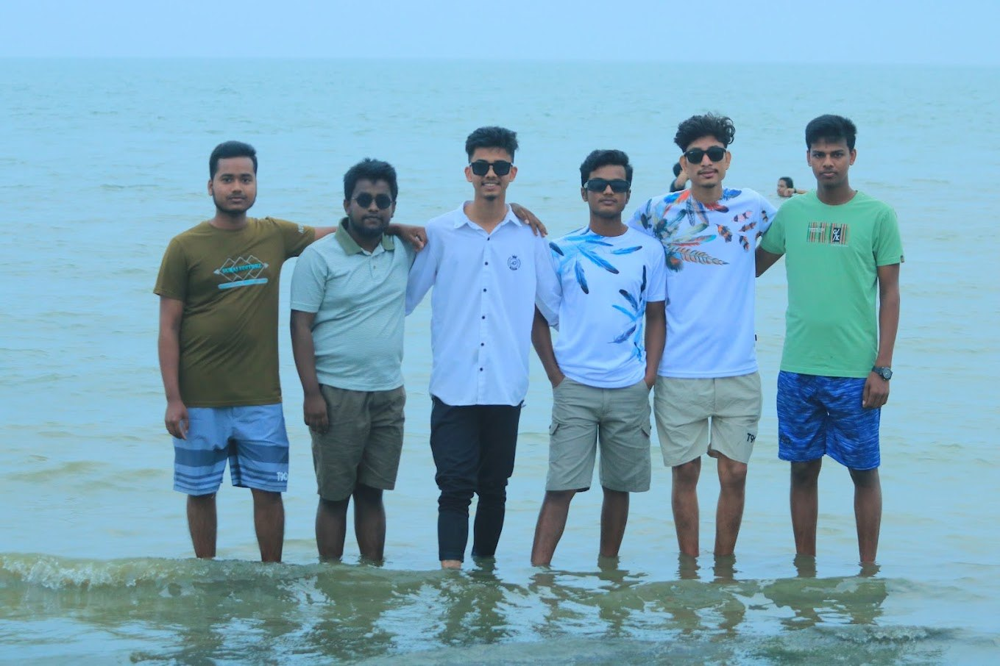
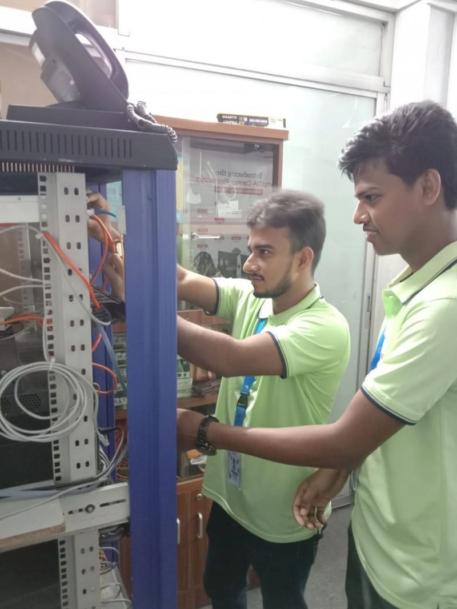
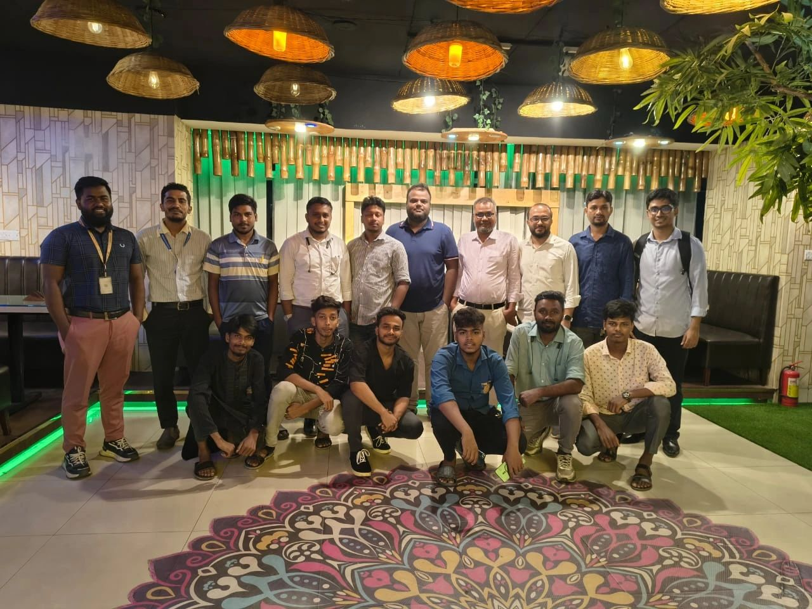
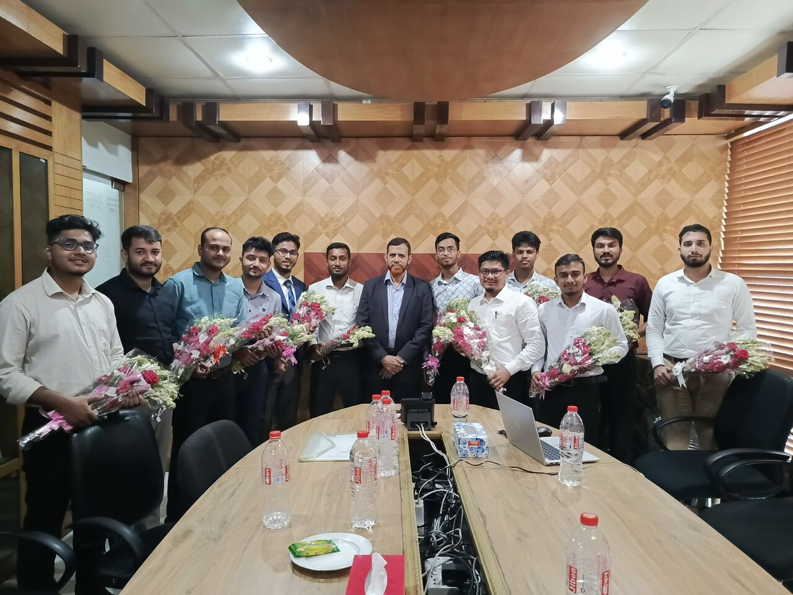
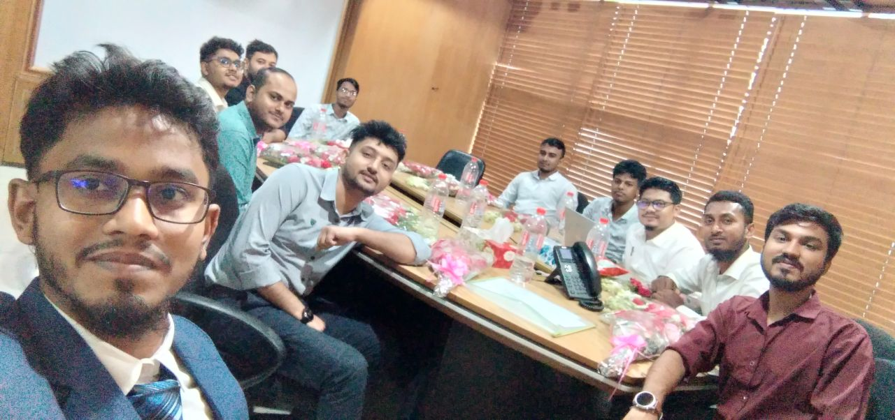
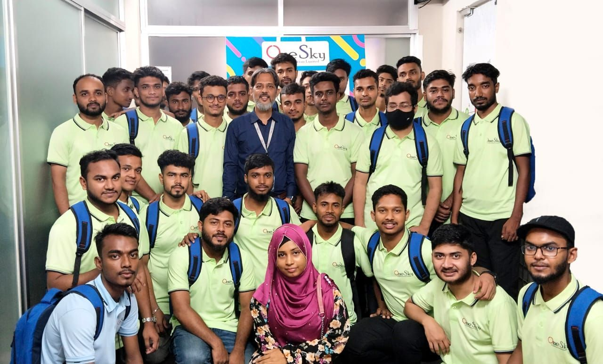
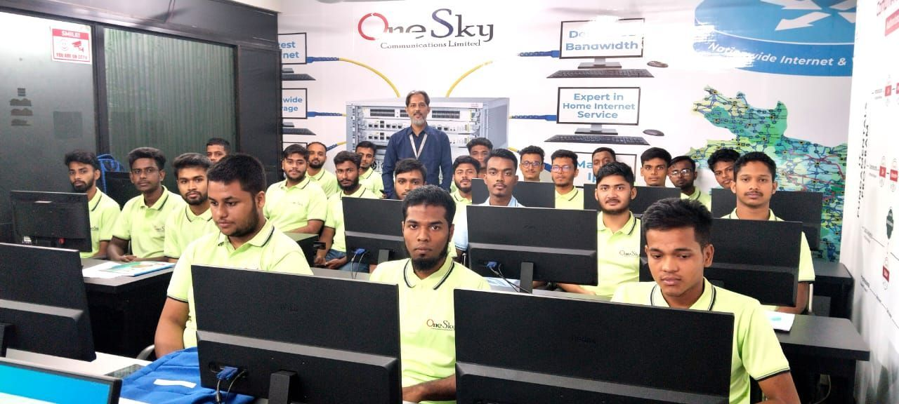

Networking
IP addressing, subnetting, routing, switching, VLAN concepts and troubleshooting.
IT PROFESSIONAL · BANGLADESH
Building practical knowledge in networking, system administration and IT infrastructure through continuous learning and hands-on labs.
01 — WHO I AM
Hello, I’m Khalifa Muhammad Sayful Islam.
I work at Optimax Communication as an Executive (TEC), with interests in networking, system administration and IT infrastructure. I’m developing my knowledge of routing, switching, MikroTik, network services and virtualization through study and practical labs.
I approach technical problems step by step and value clear communication and documentation. This portfolio shares my professional background, learning notes and projects as I continue building hands-on experience.
02 — JOURNEY
Supporting technical operations and network-related activities at Optimax Communication Ltd.
My journey at Spectra Technologies Limited as a Support Engineer (NOC) was an important part of my professional career.
Skills: Routing, Network Development and 4 more.
Monitored networks and troubleshot issues, provided technical support to clients, and assisted with system configuration and maintenance.
Currently pursuing CSE, with interests in computer networking, network administration, cloud computing, and IT infrastructure. Activities include technical workshops, programming activities, networking projects, and team collaboration.
Skills: Networking and Network Development.
Computer Science · Grade: 3.47 / 4.00
Grade: 4.18 / 5.00 · Skills: Microsoft Office.
03 — TECH STACK
A snapshot of my current technical interests and learning areas. This list will grow as I gain more hands-on experience.
IP addressing, subnetting, routing, switching, VLAN concepts and troubleshooting.
Router configuration concepts, Winbox, NAT, connectivity checks and basic network operations.
Windows environments, server fundamentals, virtualization and system troubleshooting.
Learning packet inspection and network diagnostics using practical captures and tests.
Exploring server architecture, storage, backup planning and secure network design.
Exploring Python, web frameworks and relational database fundamentals.
04 — SELECTED WORK
These are project areas and lab work to document as they are completed. Only add verified results, screenshots and details.
Hands-on practice with IP addressing, routing, switching and connectivity troubleshooting.
NETWORK ENGINEERINGExploring virtual machines, server roles and structured lab environments.
SYSTEM ADMINISTRATIONPlanning concepts for file storage, network segmentation, access control and backup strategy.
IT INFRASTRUCTUREDashboard concept for viewing ISP network status, bandwidth usage, alerts, customers, and connected devices.
ISP MANAGEMENT05 — KNOWLEDGE BASE
Ten practical networking articles. Slides advance every four seconds; expanding an article pauses the slideshow.
06 — PHOTO GALLERY
A collection of personal, professional, learning and travel moments.







07 — LET’S CONNECT
Feel free to connect through my professional profiles or email.